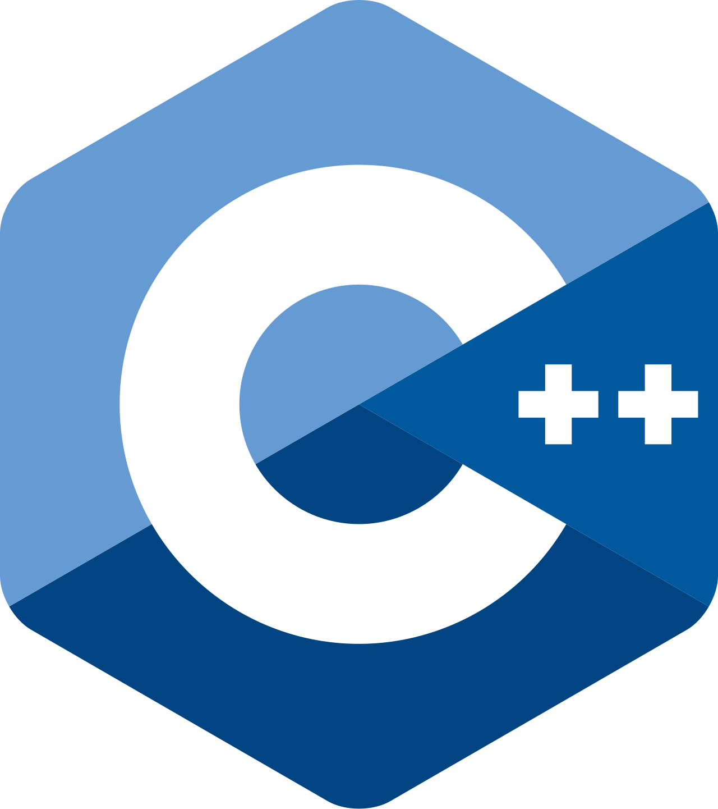
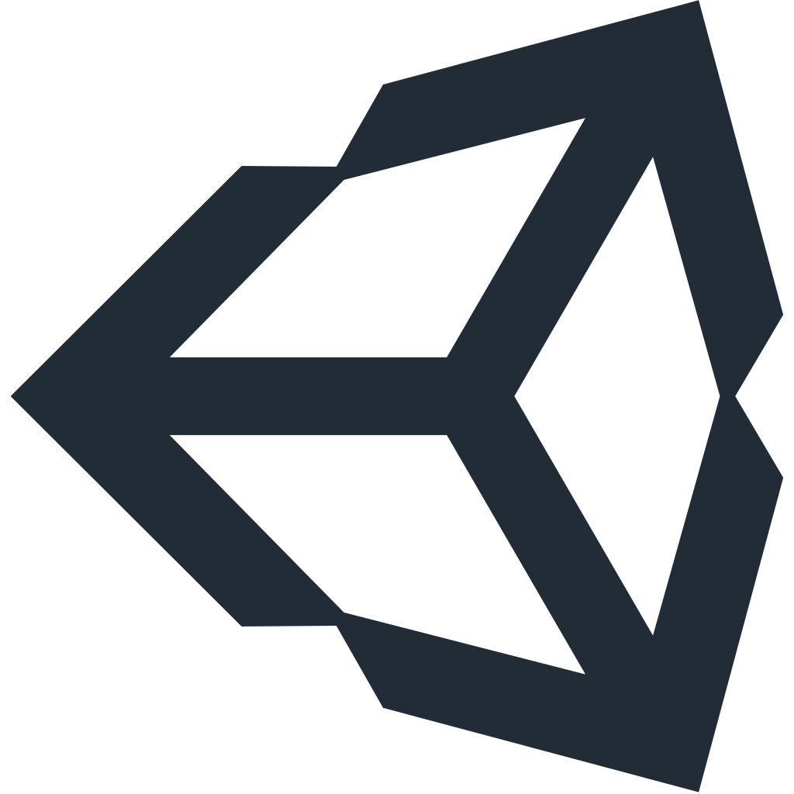
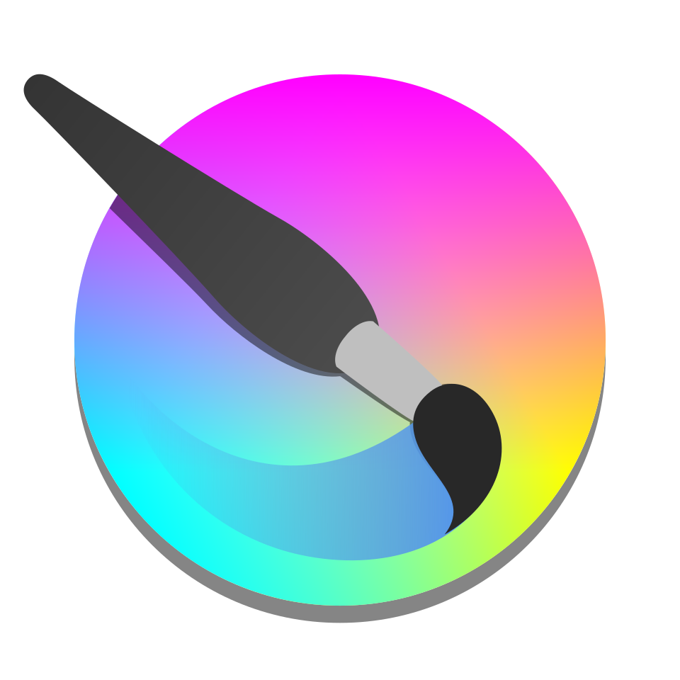
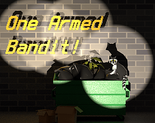
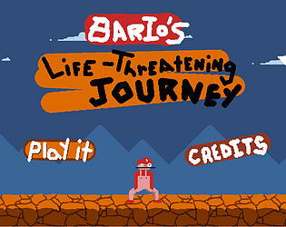

All the world's a game.
I build interactive systems and tools in Godot, Unity, and whatever I feel like. I taught CS labs at University of Oregon for Game Development and Computer Organization during my CS Master's. My background is in data and systems (MS Economics, BS Mathematics), and I love working with cellular automata and simulations.
- MS Computer Science ’26
- MS Economics ’19
- BS Mathematics ’14
Preferred Tools
Languages
 C
C
C++ C#
C# Python
Python Java
Java
Programs
 Godot
Godot
Unity
Krita Photoshop
Photoshop Blender
Blender
Selected work
Find me
Projects
Sim
Sand
Every voxel simulated on the GPU in a compute shader · needs WebGPU
Mod
Paladin Character Mod — Slay the Spire
Tirion Fordring translated into a deckbuilder. ~9200 players
Tool
Card Game Skeleton
Godot addon for the backend of digital card games
Jam

One-Armed Bandit Brackeys Summer 2025 · 4 days Jam PANOPTICON GMTK 2025 · 7 days Jam
Bario's Life-Threatening Journey Mini Jame Gam #14 · 3 days Tool Float Conversion Teacher Godot app for learning integer–float conversion More on itch.io Everything else I have put outThoughts
Nothing posted yet.